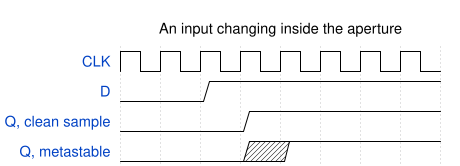
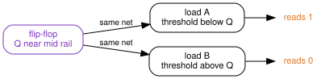
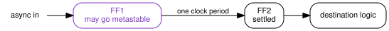

{kind=link}
Series: Digital Design Fundamentals | Article 3
The board runs for six days. On the seventh, the status register reports a state the state machine cannot reach, the firmware takes a branch that was never meant to execute, and the watchdog resets the part. Simulation has run the same sequence ten million times and never produced it. Attaching a scope to the suspect net makes the fault stop for a fortnight.
This article explains where that state came from. Two routes lead to it: an input from another clock domain, and a synchronous path that failed timing closure. Both end at the same condition, a setup or hold requirement that was not met at the sampling edge. It is for anyone who writes register transfer level code and has been told to put two flip-flops on an asynchronous input without being told what the second flip-flop is for.
A decision with no margin
A flip-flop is a decision element with gain. At the sampling edge it captures the difference between its input and its own switching threshold, then amplifies that difference until the output reaches a rail.
The captured difference sets how long the amplification takes. An input that settled a nanosecond early presents almost the full supply, and one pass through the internal loop is enough. An input that moved a few picoseconds before the edge presents a few millivolts, and the same loop needs several passes to build those millivolts up to a rail.
That difference has no lower limit. Data crossing the threshold close enough to the clock edge leaves the flip-flop microvolts to amplify, or less, and the amplification then starts from microvolts.
{kind=link}
Distance from the threshold grows as V0 e^(t / tau), where V0 is the
captured margin and tau is the settling time constant. Time to reach a rail
therefore depends on the logarithm of the margin, so a margin ten times smaller
costs only about 2.3 more time constants. Waiting buys a great deal and never
buys certainty.
While the output is still climbing it sits between the rails. That is metastability. Not a broken circuit, but an amplifier part way through a decision.
Where the clock edge lands
Setup time and hold time describe a window around the clock edge in which the input has to be stable. An input that changes inside that window is the input that leaves almost no margin to amplify.

Two situations put a real design in that window. The first is a signal with no fixed relationship to the sampling clock: another clock domain, a button, a sensor. The second is a fully synchronous path that failed timing closure, where static timing analysis has already reported a violated setup or hold requirement.
The two look different in a report and identical at the flip-flop. Both are the same condition, a setup or hold requirement not met at the sampling edge.
One wire, two answers
Settling time is not the only hazard, and the next one does not depend on it at all. A flip-flop output is a wire, and a wire goes to more than one place.
While the output sits near mid rail, every gate on that net is reading it. Each has its own switching threshold, set by the ratio of its pull-up and pull-down networks, and those thresholds are not identical. Process variation moves them, different cell types have different ones by design, and different loads mean the reads do not happen at the same instant.

One node, one instant, two answers. Neither gate is faulty and neither reading is wrong. The wire did not carry a logic value for them to agree about.
That is the failure, and metastability by itself is not. A flip-flop sitting at mid rail with nothing reading it costs some current and resolves. The damage starts when that voltage reaches two places and the two places disagree.
Downstream registers then hold values that cannot occur together. A one-hot state machine ends a cycle with two bits high, so two decodes match at once. A handshake ends with both ends believing the other holds the token. None of those states appear in the encoding, in the assertions or in the coverage report. The register transfer level model cannot represent a wire that two readers disagree about, so simulation never produces them.
The bug that results is rare, random, and moves when observed. A scope probe adds capacitance and shifts the timing. Temperature and supply voltage move switching thresholds. Rebuilding the design changes placement, so the wire delays that produced the divergence are gone and a fresh set arrives elsewhere.
Two flip-flops, and why not one
The fix follows from the exponential. Give the metastable node a full clock period to settle before anything reads it.

The first flip-flop absorbs the risk, and its output goes nowhere except the second flip-flop, so a divergent read has nothing to diverge into. The single-load rule matters as much as the second stage. Fanning the first stage out to anything else recreates the divergence the structure exists to prevent.
Putting a number on it
Mean time between failures, or MTBF, follows from the settling time constant and two frequencies:
MTBF = e^(t_r / tau) / (T0 x f_clk x f_data)
t_r is the settling time allowed, T0 is the width of the aperture, f_clk
is the destination clock frequency and f_data is the rate of input changes.
Only t_r sits in the exponent, so it dominates everything else.
Liberty timing files do not carry tau or T0. They model a cell as a
deterministic table of setup, hold and clock-to-Q, and metastability is a
probability distribution with an exponential tail. The parameters have to come
from transistor-level simulation instead. Measuring them on
sky130_fd_sc_hd__dfxtp_1, the real 24-transistor SkyWater cell, gives this:
| Corner | Setup | tau | T0 |
|---|---|---|---|
| ss slow | 45.6 ps | 116.8 ps | 67.4 ps |
| tt typical | 28.6 ps | 43.8 ps | 492.2 ps |
| ff fast | 20.5 ps | 21.8 ps | 1872 ps |
tau varies by 5.4 times across the corners, and it sits in an exponent.
Characterise at the slow corner, because that is where the latch resolves most
slowly.
Take the slow corner and put the synchroniser somewhere demanding. The
destination clock f_clk is 400 MHz, so its period is 2.5 ns. The asynchronous
input f_data changes at 10 MHz. The first stage gets half a period to settle,
and each stage after it adds a full period.
| Stages | Settling allowed | In time constants | MTBF |
|---|---|---|---|
| 1 | 1.25 ns | 11 | 0.16 seconds |
| 2 | 3.75 ns | 32 | 10 years |
| 3 | 6.25 ns | 54 | 2.0e10 years |
A single flip-flop fails six times a minute. The second stage moves that to about ten years, which is a product lifetime and not a comfortable margin. The third stage moves it to twenty billion years. Each stage is worth roughly nine orders of magnitude, because each one adds 2.5 ns of settling and that is 21 time constants.
Slow the clock to 100 MHz and the same two-stage synchroniser reports 2.8e43 years. That is the number most designers meet, and it is why two flip-flops is treated as automatic. The rule is safe at 100 MHz and marginal at 400 MHz, and nothing about the flip-flop changed.
Two stages is a convention, not a law. It holds only while tau stays small
against the clock period. Raise the same cell to 1 GHz and two stages give half
a second, three give under an hour, and it takes five to reach 2500 years. A
130 nm cell has no business running at 1 GHz, and a process built for that speed
has a tau of a few picoseconds.
The measurement and the code behind those tables are at github.com/morganp/flipflop-mtbf.
Closing
For any signal entering a clock domain from outside it, three questions:
- Does it pass through two flip-flops before anything else reads it?
- Does the first of those flip-flops drive exactly one load?
- Does anything else cross alongside it that has to stay consistent with it?
The second question is the one this article adds. A synchroniser with a fanned out first stage looks correct in a schematic review and fails in the same way as no synchroniser at all.
The third question is a different problem. Two flip-flops protect one bit, and they promise nothing about a multi-bit bus, about related control signals synchronised separately, or about a synchronous path that failed timing closure. Those need handshakes, Gray coding, or a fix in the path itself.